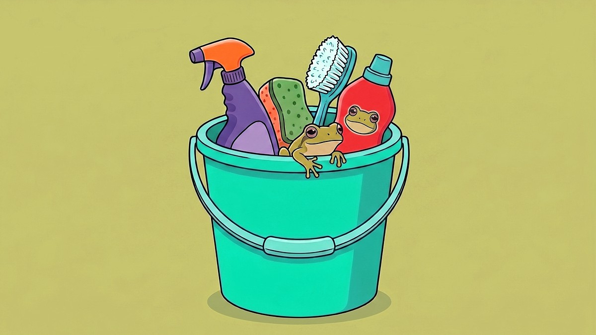

The same donor, three names: how clustering actually works
Cleaning messy donor names in OpenRefine, one algorithm at a time
by Ada Homolova · September 27, 2026

British political donation data is beautiful in one specific way: it's dirty enough to teach you a lot about data cleaning.
Take donor names. In the dataset Jonathan Stoneman cleaned in our latest Pondcast session, one column held 21,000 "different" donor names across 73,000 rows. Except many of them weren't different at all:
- Lord Harris of Peckham
- Lord Philip Harris of Peckham
- Lord Phillip Harris of Peckham (two L's)
Same guy, three spellings. If you pivot on this column as-is, his donations split into three piles, and your total is wrong. Jonathan took to OpenRefine to help him do the job.
First, make the data comparable
Before clustering, you can do these three things to pick the most low hanging fruit:
- Copy the column. Never clean the original. You want
donor_name(untouched) next todonors_cleaned(your working copy), so you can always compare back. - Normalize case. Everything to lowercase. "Phoenix Partnership" and "phoenix partnership" become one entry, not two.
- Trim whitespace. A leading space before "Christopher Harborne" makes him invisible to exact matching.
Then: cluster
In OpenRefine, you click the column menu → Facet → Text facet, then Cluster. It's not just one algorithm, but a menu of them, in two families. Jonathan runs them in order, strictest first.
1. Key collision methods
Every value gets transformed into a simplified "key": lowercased, punctuation stripped, and values that produce the same key land in the same cluster. These are fast, but you can't tune how strict they are.
Fingerprint: the default, and the strictest. It strips punctuation and whitespace, lowercases everything, sorts the words alphabetically, and joins them back. "Alan Bound Margate (Limited)", "Alan-Bound Margate Limited", and "alan bound margate limited" all produce the same fingerprint, so they're proposed as one cluster. It rarely suggests a wrong merge. Run it first.
N-gram fingerprint: looser. Instead of sorting whole words, it chops each value into small chunks of characters (n-grams), sorts those, and compares. "Krzysztof", "Kryzysztof", and "Krzystof" have different lengths, but they use the same letters, so they share the same 1-gram fingerprint. Run it second: it catches near-misses fingerprint would miss (a typo in one word, an extra word in the middle) but proposes more false merges.
Phonetic fingerprint: matches on how words sound, not how they're spelled. "Smith" and "Smyth" cluster. There are four phonetic algorithms to choose from, and which one works best depends on where your names come from:
- Metaphone3: the go-to for English, plus first and last names common in the United States.
- Cologne phonetics: the same idea, optimized for German.
- Daitch-Moktoff: a Soundex refinement built for Slavic and Yiddish surnames. Again awkwardly specific, but matching names is awkward by definition.
- Beider-Morse: figures out the likely language of each name from its spelling, then applies that language's pronunciation rules. Slower, but worth it on mixed-language name columns.
The annoying part of phonetic matching in practice: in Jonathan's data, every donor called Christopher clustered together, and so did all the "Government of..." entries. Obviously not the same thing. But hidden in that noise you occasionally spot a real match you'd otherwise have missed. Run phonetic last, with patience.
2. Nearest neighbor methods
Key collision is all-or-nothing: same key, same cluster. Nearest neighbor methods are more flexible. They measure how far apart two strings are (the radius), and you decide how far is still "the same". A small radius merges only near-identical values. A bigger one suggests more adventurous merges (and more wrong ones).
- Levenshtein distance: the number of single-character edits needed to turn one string into another. This means: one letter added, removed, or changed. "Harris" and "Haris" are one edit apart. Simple, intuitive, and a good pick for short values.
- PPM: compares strings by compressing them. Similar strings compress well together; different ones don't. This one actually comes from DNA sequencing (yes) and it's loose: the docs call it a last resort.
Jonathan once timed himself doing exactly this, on a plane and again at a conference with nothing to do before dinner: about 50,000 rows of this same donation data, two and a half hours to clean every cleanable column. Worth it, because occasionally you find a gem, like the London nightclub Ministry of Sound grouped with all the other ministries, giving out free tickets to MPs.
And you only pay that cost once. OpenRefine keeps a history of every edit you make, and you can export it as a JSON file. Next month, when the updated donation data arrives with the same mistakes in it, you apply the file and the whole cleaning replays itself.
For the details on every method see OpenRefine's clustering reference.
The decision is yours
There are also things these algorithms won't do for you.
1. Deciding which spelling wins
Sometimes it's pure style: "Ltd" vs "Ltd." vs "Limited." Pick one, be consistent, move on. Sometimes you need to Google the correct legal name. And sometimes it's a judgment call about your story: Jonathan renamed all the Harris variants to plain "Lord Harris" because he didn't care about the Peckham part.
2. Deciding what to clean
You don't have to clean everything — only the names that matter for your analysis. If the Barneswick Liberal Club has a few spellings and you'll never report on them, skip them.
3. Deciding what is the same entity
Clustering catches spelling variants. It cannot tell you whether two similar names are the same entity — that's entity resolution, and it's a different (harder) problem. "IBM" and "IBM Czech Republic" might be one company for your story, or two.
Watch the full session on YouTube
Including the LLM approach to the same messy data: Pondcast #8: On data cleaning
🐸 Want to clean data like this live with us? Sessions happen every two weeks in The Pond! Come say hi.